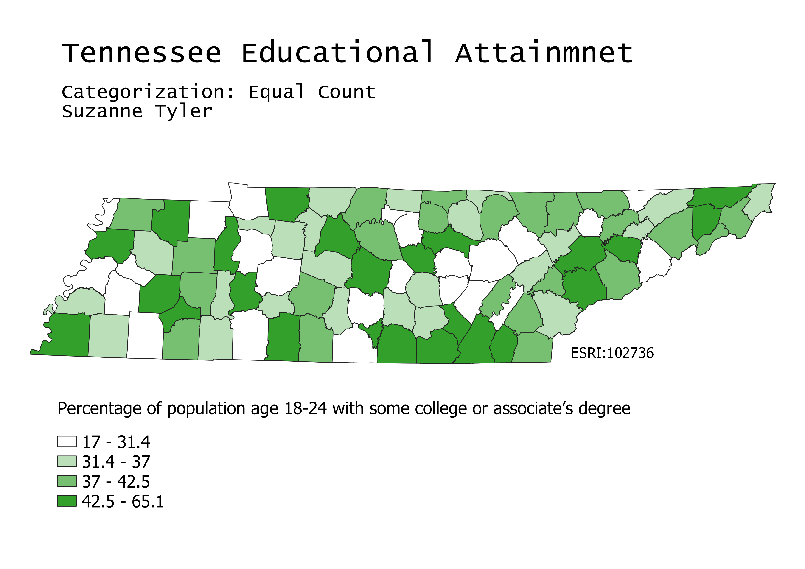

Tennessee Educational Attainment Choropleths
Suzanne Tyler
GEOG 370-006
Homework 6 Part 2
February 25, 2022
Map 1
This map was made using equal count data categorization. This means that the input values were equally distributed between each output color on the map. The nice thing about this kind of data categorization is that the map shows an even color distribution. However, this could mean that data is misrepresented. A high number of a specific value would be hard to see on this map becuase the categories each have an equal number of values.

Map 2
Categorization used: Equal interval
Map 3
Categorization used: Natural breaks